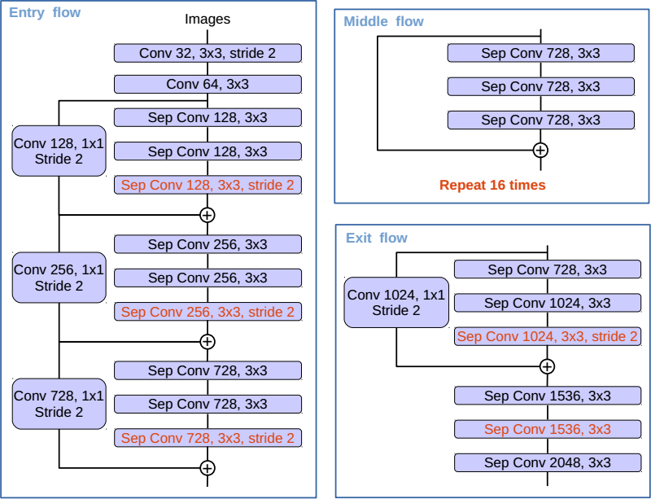
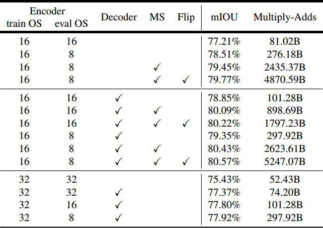
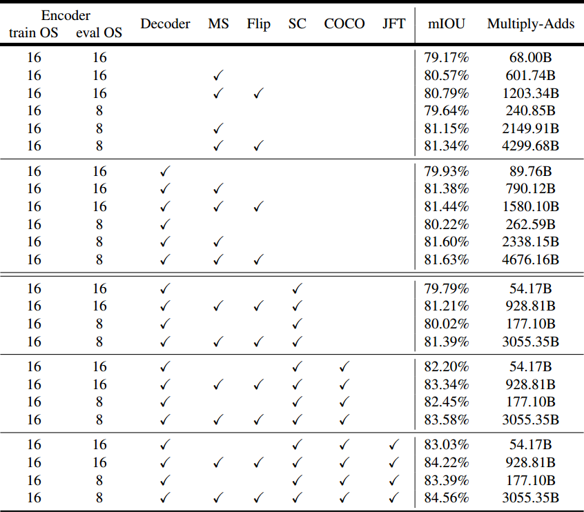

DeepLab-v3+
Encoder-Decoder with Atrous Separable Convolution for Semantic Image Segmentation
Paper: https://arxiv.org/abs/1802.02611
Blog: https://research.googleblog.com/2018/03/semantic-image-segmentation-with.html
Code: https://github.com/tensorflow/models/tree/master/research/deeplab
在 DeepLab-v3 上添加解码器细化分割结果（尤其是物体边界），且使用深度可分离卷积加速。
DeepLabv3+, extends DeepLabv3 by adding a simple yet effective decoder module to refine the segmentation results especially along object boundaries.
We further explore the Xception model and apply the depthwise separable convolution to both Atrous Spatial Pyramid Pooling and decoder modules, resulting in a faster and stronger encoder-decoder network.
中文
简介
考虑语义分割的两种类型：
空间金字塔池化模块：通过池化不同分辨率的特征，捕获丰富的上下文信息
编码器-解码器结构：能够获得锐利的物体边界
空间金字塔池化模块计算密集，因为提取输出特征只是输入大小的 8 倍甚至 4 倍。
编码器解码器结构在编码器路径中计算更快（因为没有扩散特征）。
结合二者优点，提出加入多尺度上下文信息来丰富编码器解码器网络中的编码器模块。
采用 Xception 模型在速度和精度上都有所提升
相关工作
空间金字塔池化
编码器-解码器
深度可分离卷积
方法
带扩散卷积的编码器-解码器
扩散卷积
深度可分的卷积
DeepLabv3 作为编码器
提出的解码器
在 DeepLabv3 的工作中，这些功能被双线性上采样 16 倍，可以被认为是一个朴素的解码器模块。
但是，这个朴素的解码器模块可能无法成功恢复物体分割细节。
因此，我们提出了一种简单而有效的解码器模块，如图2所示。
编码器特征双线性插值上采样 4 倍
然后与具有相同空间分辨率的相应低级特征合并
作用一个 1 x 1 卷积在低级特征上以减少通道数
经过一些 3 x 3 的卷积以精炼特征
再双线性插值上采样 4 倍

图 2. 我们提出的 DeepLabv3+，采用编码器 - 解码器结构扩展了 DeepLabv3。编码器模块通过在多个尺度上应用扩散卷积来编码多尺度上下文信息，而简单但有效的解码器模块沿着物体边界细化分割结果。
修改的 Aligned Xception
Xception 模型在 ImageNet 上展示了具有快速计算能力的图像分类结果。
最近，MSRA 团队修改了 Xception 模型（称为 Aligned Xception），并进一步推动了物体检测任务的性能。

图 3. Xception 模型修改如下：
更多层（与 MSRA 的修改相同，但 Entry 流中的更改除外）
所有最大池化操作都由具有跨步的深度可分离卷积替换
在每次 3 x 3 深度卷积之后添加额外 BN 和 ReLU，类似于 MobileNet
一些改进：
不修改入口流的网络结构，为了快速计算和存储效率
替代最大池化操作为深度可分离卷积，这使我们能够应用多孔分离卷积在任意分辨率提取特征（另一种选择是延长 arous 算法到最大池化操作）
在 3 x 3 的深度可分离卷积后添加额外的 BN 和 ReLU 激活
实验评估
解码器设计选择
考虑三个地方进行不同的设计：
用来减少编码器模块的底层特征图的通道的 1 x 1 卷积
得到清晰的分割结果的 3 x 3 卷积
使用哪些编码器低级特征
我们考虑三个不同的设计选择：
1 x 1 卷积用于减少编码器模块的低级特征映射的通道
实验表明，48 个 channel 的 1 x 1 卷积效果最好
3 x 3 卷积用于获得更清晰的分割结果
实验表明，2 个 256 channel 的 3 x 3 卷积效果最好
应该使用什么编码器低级特征
实验表明，只使用 Conv2 的特征效果最好
ResNet-101 作为网络主干
基线
添加解码器
更粗粒度的特征图

表 3. 使用 ResNet-101 作为特征提取器时，PASCAL VOC 2012 val 集的推理策略。
train OS：训练期间使用的输出步幅。
eval OS：评估期间使用的输出步幅。
Decoder：采用所提出的解码器结构。
MS：评估期间的多尺度输入。
Flip：添加左右翻转输入。
Xception 作为网络主干
ImageNet 预训练
基线
加入解码器
使用深度可分离卷积
在 COCO 上预训练
在 JFT 上预训练
测试集结果
定性结果
失败的情况

表 5. 使用修改的 Xception 作为特征提取器时，PASCAL VOC 2012 val 集的推理策略。
train OS：训练期间使用的输出步幅。
eval OS：评估期间使用的输出步幅。
Decoder：采用所提出的解码器结构。
MS：评估期间的多尺度输入。
Flip：添加左右翻转输入。
SC：对 ASPP 和解码器模块采用深度可分离卷积。
COCO：模型在 MS-COCO 数据集上预训练。
JFT：模型在 JFT 数据集上预训练。
沿物体边界的改进
与朴素双线性上采样相比，将提出的解码器用于 ResNet-101 和 Xception 网络主干来改进性能。
结论
我们提出的模型“DeepLabv3+”，采用编码器-解码器结构，其中 DeepLabv3 用于编码丰富的上下文信息，并且采用简单但有效的解码器模块来恢复对象边界。
还可以应用扩散卷积来对提取任意分辨率的编码器特征，这取决于可用的计算资源。
我们还探索了 Xception 模型和扩散可分离卷积，使得所提出的模型更快更强。
最后，我们的实验结果表明，所提出的模型在 PASCAL VOC 2012 语义图像分割基准上得到了新的最新性能。
English
Introduction
we consider two types of neural networks for semantic segmentation:
spatial pyramid pooling module: captures rich contextual information by pooling features at different resolution
encoder-decoder structure: is able to obtain sharp object boundaries.
it is computationally prohibitive to extract output feature maps that are 8, or even 4 times smaller than the input resolution.
encoder-decoder models lend themselves to faster computation (since no features are dilated) in the encoder path and gradually recover sharp object boundaries in the decoder path.
Attempting to combine the advantages from both methods, we propose to enrich the encoder module in the encoder-decoder networks by incorporating the multi-scale contextual information.
show improvement in terms of both speed and accuracy by adapting the Xception model
contributions:
propose a novel encoder-decoder structure which employs DeepLabv3 as a powerful encoder module.
can arbitrarily control the resolution of extracted encoder features by atrous convolution to trade-off precision and runtime, which is not possible with existing encoder-decoder models.
adapt the Xception model for the segmentation task and apply depthwise separable convolution to both
ASPP module and decoder module, resulting in a faster and stronger encoder-decoder network.attains a new state-of-art performance on PASCAL VOC 2012 dataset.
make our Tensorflow-based implementation of the proposed model publicly available.
Related Work
Spatial pyramid pooling
Encoder-decoder
Depthwise separable convolution
Methods
Encoder-Decoder with Atrous Convolution
Atrous convolution
Depthwise separable convolution
DeepLabv3 as encoder
Proposed decoder
In the work of DeepLabv3, the features are bilinearly upsampled by a factor of 16, which could be considered a naive decoder module.
However, this naive decoder module may not successfully recover object segmentation details.
We thus propose a simple yet effective decoder module, as illustrated in Fig. 2.
The encoder features are first bilinearly upsampled by a factor of 4
then concatenated with the corresponding low-level features from the network backbone that have the same spatial resolution
apply another 1 x 1 convolution on the low-level features to reduce the number of channels
apply a few 3 x 3 convolutions to refine the features
another bilinear upsampling by a factor of 4
Figure 2. Our proposed DeepLabv3+ extends DeepLabv3 by employing a encoder-decoder structure. The encoder module encodes multiscale contextual information by applying atrous convolution at multiple scales, while the simple yet effective decoder module refines the segmentation results along object boundaries.
Modified Aligned Xception
The Xception model has shown promising image classification results on ImageNet with fast computation.
More recently, the MSRA team modifies the Xception model (called Aligned Xception) and further pushes the performance in the task of object detection.
Figure 3. The Xception model is modified as follows:
more layers (same as MSRA’s modification except the changes in Entry flow)
all the max pooling operations are replaced by depthwise separable convolutions with striding
extra batch normalization and ReLU are added after each 3 x 3 depthwise convolution, similar to MobileNet.
a few more changes:
do not modify the entry flow network structure for fast computation and memory efficiency
all max pooling operations are replaced by depthwise separable convolution with striding, which enables us to apply atrous separable convolution to extract feature maps at an arbitrary resolution (another option is to extend the atrous algorithm to max pooling operations)
extra batch normalization and ReLU activation are added after each 3 x 3 depthwise convolution
Experimental Evaluation
Decoder Design Choices
we consider three places for different design choices:
the 1 x 1 convolution used to reduce the channels of the low-level feature map from the encoder module
the 3 x 3 convolution used to obtain sharper segmentation results
what encoder low-level features should be used
ResNet-101 as Network Backbone
Baseline
Adding decoder
Coarser feature maps
Table 3. Inference strategy on the PASCAL VOC 2012 val set when using ResNet-101 as feature extractor. train OS: The output stride used during training. eval OS: The output stride used during evaluation. Decoder: Employing the proposed decoder structure. MS: Multi-scale inputs during evaluation. Flip: Adding left-right flipped inputs.
Xception as Network Backbone
ImageNet pretraining
Baseline
Adding decoder
Using depthwise separable convolution
Pretraining on COCO
Pretraining on JFT
Test set results
Qualitative results
Failure mode
Table 5. Inference strategy on the PASCAL VOC 2012 val set when using modified Xception as feature extractor. train OS: The output stride used during training. eval OS: The output stride used during evaluation. Decoder: Employing the proposed decoder structure. MS: Multi-scale inputs during evaluation. Flip: Adding left-right flipped inputs. SC: Adopting depthwise separable convolution for both ASPP and decoder modules. COCO: Models pretrained on MS-COCO dataset. JFT: Models pretrained on JFT dataset.
Improvement along Object Boundaries
employing the proposed decoder for both ResNet-101 and Xception network backbones improves the performance compared to the naive bilinear upsampling.
Conclusion
Our proposed model “DeepLabv3+” employs the encoder-decoder structure where DeepLabv3 is used to encode the rich contextual information and a simple yet effective decoder module is adopted to recover the object boundaries.
One could also apply the atrous convolution to extract the encoder features at an arbitrary resolution, depending on the available computation resources.
We also explore the Xception model and atrous separable convolution to make the proposed model faster and stronger. Finally, our experimental results show that the proposed model sets a new state-of-the-art performance on the PASCAL VOC 2012 semantic image segmentation benchmark.